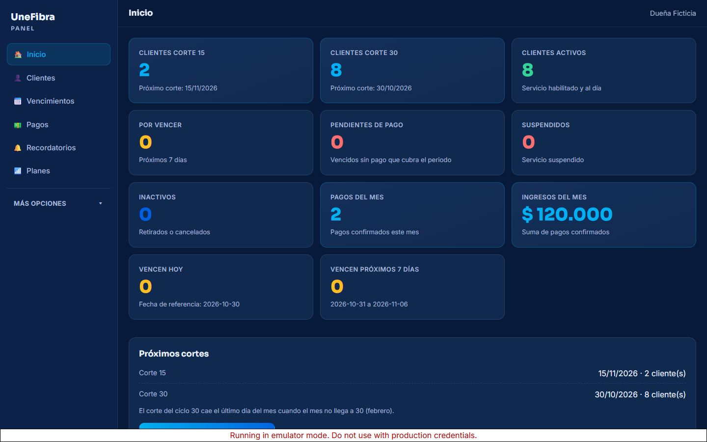
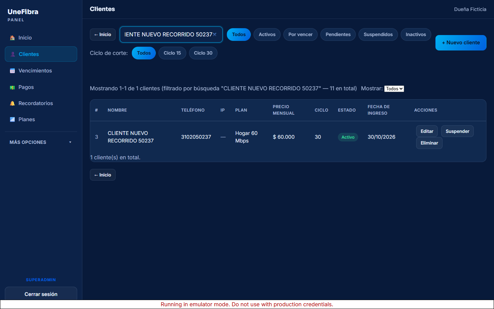
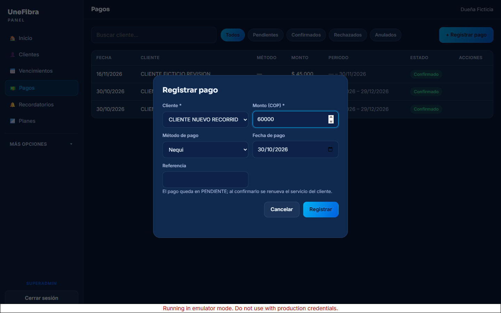
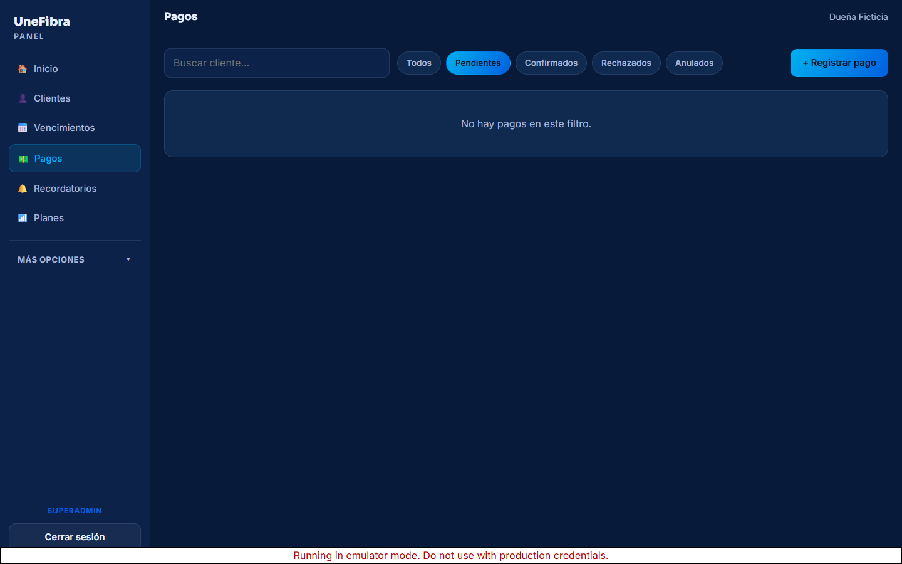
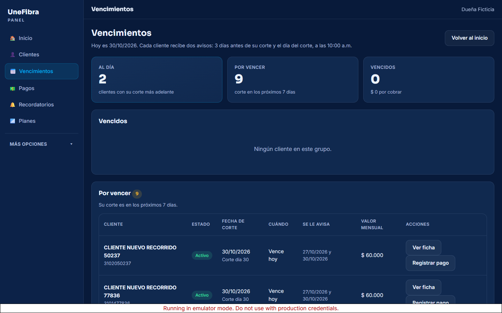
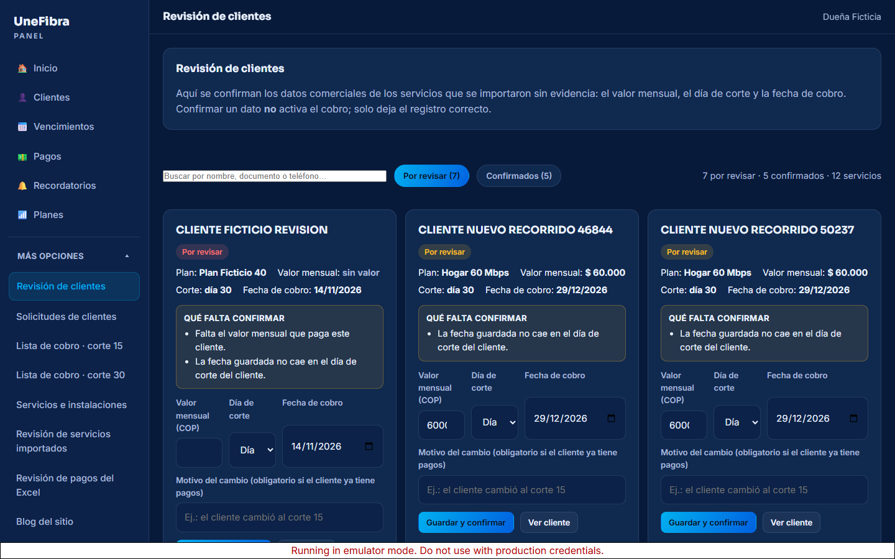
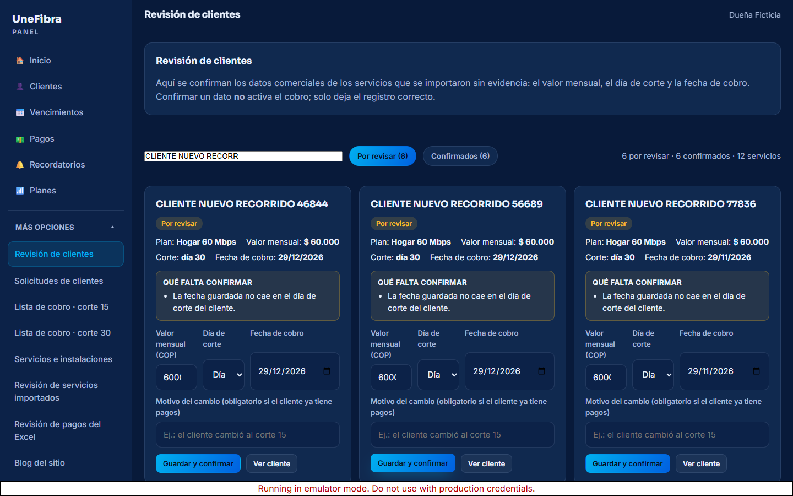
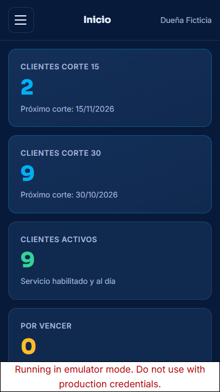
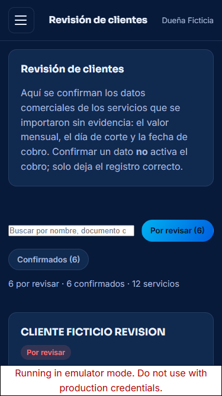

Capturas del recorrido — panel administrativo UneFibra
Generadas por el recorrido automático de 15 pasos (escritorio 1440×900) y 9 comprobaciones en móvil (375×667) contra el emulador con datos ficticios. Esta galería es para revisión humana: las capturas no fueron inspeccionadas visualmente por el agente.
Inicio (escritorio) Indicadores, próximos cortes, avisos y panel de datos por revisar 01-inicio.png · 1440×900 px · 144 KB

Clientes (escritorio) Cliente recién creado con su plan y su ciclo de corte 03-cliente-con-plan-y-corte.png · 1440×900 px · 100 KB

Pagos · formulario Registro de pago desde el panel 05-formulario-pago.png · 1440×900 px · 101 KB

Pagos (escritorio) Pago confirmado y su estado 06-pago-confirmado.png · 1440×900 px · 54 KB

Vencimientos (escritorio) Quién está al día, por vencer y vencido 04-vencimientos.png · 1440×900 px · 134 KB

Revisión de clientes (escritorio) Qué falta confirmar, valor, corte y fecha 09-revision-clientes.png · 1440×900 px · 168 KB

Revisión · corrección guardada Resultado tras guardar con motivo 10-revision-corregida.png · 1440×900 px · 142 KB

Inicio (móvil 375×667) Misma pantalla en el teléfono m1-inicio.png · 375×667 px · 58 KB

Revisión de clientes (móvil) Tarjeta usable en pantalla pequeña m3-revision.png · 375×667 px · 47 KB

Menú móvil Las seis entradas del propietario m2-menu.png · 375×667 px · 30 KB